⚠ THIS GAME CONTAINS INTENSE FLASHING & STROBE EFFECTS ⚠
Players with photosensitive epilepsy may experience seizures. Proceed with extreme caution. Have medical assistance ready if needed.
⚠ THIS GAME CONTAINS INTENSE FLASHING & STROBE EFFECTS ⚠
Players with photosensitive epilepsy may experience seizures. Proceed with extreme caution. Have medical assistance ready if needed.
Silent Tears is NOT a casual game. It explores:
This is presented in a SERIOUS, realistic manner that mirrors a damaged mind.
DO NOT PLAY IF:
The game accesses limited system data:
C:\Users\YourName)IMPORTANT:
This data is NOT collected, NOT shared, and NOT uploaded. Used locally only for immersion & personalization.Default save location:
C:\Users\YourName\AppData\Roaming\Silent_Tears💡 TIP: Add ?user=YourName to the URL to see your actual path on this page.
On each launch, the game determines your approximate location (country/city) using your public IP address. This info is stored locally only:
C:/Users/YourName/Desktop/SilentTears/USER_DATA/user_location.json⚠ NOT UPLOADED. ⚠ NEVER SHARED.
Used only to enhance immersion.Background Python scripts may:
These are harmless, temporary effects. No files are deleted, installed, or modified. No personal data is accessed.
To prevent Python scripts from running, delete the PYTHON_STUFF folder.
WARNING:
This game is NOT malware. However, because it uses system features (mouse input, browser calls, shell commands), some antivirus tools may flag it incorrectly.
Solution: Whitelist the game folder in your antivirus/firewall settings. It's completely safe.
